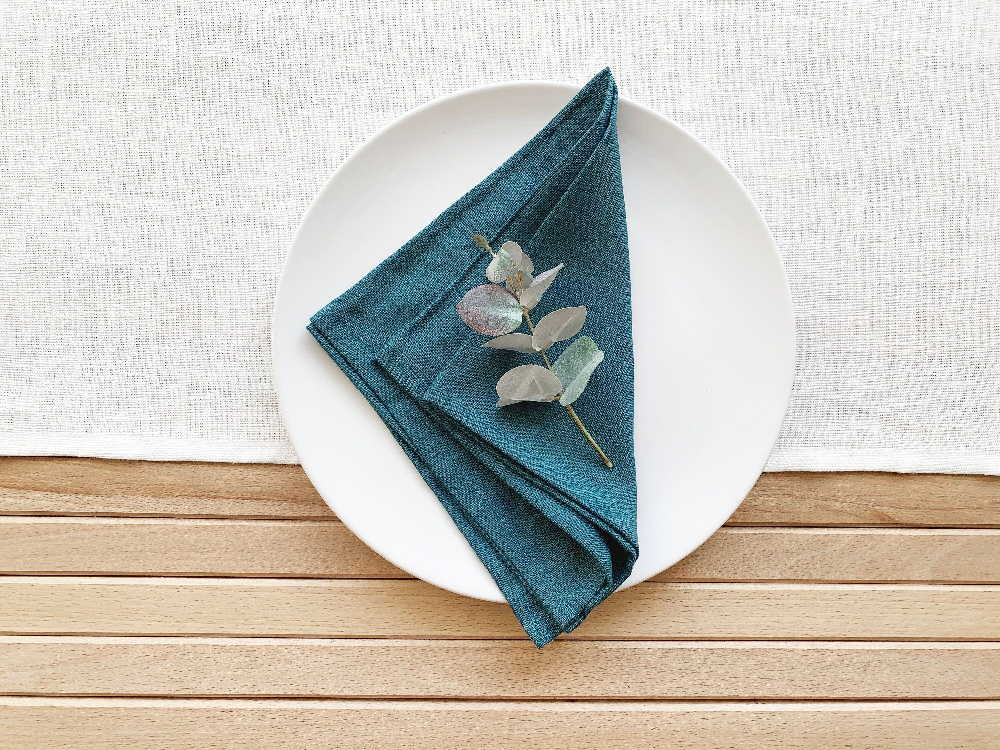

NAPKINS
History
The term ‘napkin’ comes from the Late Middle English nappekin, from Old French nappe (tablecloth, from Latin mappa). Paper napkins
are said to originate from China in the second century AD. According to some sources, napkins started out as soft dough used by
the Spartans in Greece to clean their fingers.The Romans later introduced napkins of two different sizes: one for wiping the hands
and mouth, and one for covering the lap.
In a meal Setting:
After seated at restaurant, the next thing should be placing the napkin at lap. When placing Dinner or Bistro or Silverware napkins
in lap, the napkin should not be used to wipe face,blow nose or wipe silverware.When a meal is done, loosely fold the napkin and place
it in left or right side of your plate. Donot drop on floor or in chair.
BEVERAGE NAPKINS
DINNER NAPKINS
SILVERWARE NAPKINS